What’s New
Keep up-to-date on the latest vision-related news and eye care events in our Practice.

3 Ways Diabetes Can Affect Your Vision and Eyes
Did you know that people with diabetes are 20 times more likely to get eye diseases than those without it? There are three major eye conditions that diabetics are at risk for developing: cataracts, glaucoma, and diabetic retinopathy. To prevent these sight-threatening diseases, it's important to control your blood sugar...
Read More
Your Eyes Are the Windows to Your Health
Your eyes aren't just the windows to your soul — they can also reveal valuable information about your general health beyond whether you need glasses, including: diabetes, heart disease, and even cancer. It is not unusual for people to come in for an eye exam just to check their eyesight...
Read More
How Smoking Impacts Vision
Smoking harms nearly every system in your body — including your eyes. Though we are all aware of the health effects associated with smoking, such as lung cancer, heart disease, and bad teeth, few know about the negative impact it can have on our vision. Smoking and Eye Disease Smoking,...
Read More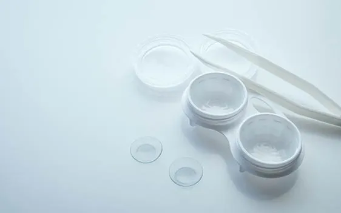
Here’s Why Hydrogen Peroxide is an Excellent Contact Lens Solution
Once you and your doctor have decided on the type of contact lenses you'll need, it's time to choose the most suitable contact lens solution for your eyes and contacts. There exist 2 different types of solution for contact lenses: Multipurpose and Hydrogen Peroxide-based. While both remove debris and build-up,...
Read More
Smart Hygiene Habits to Care for Your Contact Lenses
Swimming in a pool with your contacts on or topping off your solution may seem harmless, but they could compromise your contact lenses and your vision. Below are daily habits to adopt for optimal contact lens care: Wash Your Hands Regularly Whether you use daily or monthly contact lenses, make...
Read MoreHow to Keep Glasses from Getting Foggy
Whether you live in a cold climate or have visited one in the winter, you have probably seen someone who just walked in from the cold outdoors sporting glasses that are no longer transparent, or perhaps you’ve experienced it yourself. Why Do Glasses Fog Up? There are several factors that...
Read More12 Tips for Optimal Eye Health
Good Eye Care Habits & Hygiene By practicing good eye care habits and hygiene, you can prevent many vision problems from occurring. Eye problems and the risks associated with vision loss only grow as you age. By neglecting eye care, you place yourself at a higher risk of suffering from...
Read More
Wearing Colored Contact Lenses This Halloween? Beware and Take Care!
Countless adults, teens and even children will be wearing colored contact lenses this Halloween, but few are aware of the risks involved. Ever wondered what those cat-eye contacts are doing to your eyes? If you got them without a prescription, beware of health complications. Enjoy a safe and happy Halloween...
Read More
Sports-Related Eye Injuries
September Is Sports Eye Safety Month! Ocular sports trauma is among the leading causes of permanent vision loss in North America. Tens of thousands of people get treated for sports-related eye injuries a year, with the most common injuries occurring during water sports and basketball. Infections, corneal abrasions, eye socket...
Read MoreSummer Heat Wave and Your Eyes
This summer, heat waves with scorching temperatures have hit communities nationwide, making an already hot summer even hotter. With high temps and heat waves in certain areas, it’s now more important than ever to protect yourself. For best practices and tips for maintaining healthy vision in the summer heat, talk...
Read MoreUV Safety Awareness Month
July is UV Safety Awareness Month, and no wonder! With the summer sun out in full force, it’s now more important than ever to protect your eyes from harmful UV rays. During this month, people who have suffered from UV ray damage and their loved ones are encouraged to share...
Read More
Top 4 Eyecare Tips for Summer Vacation
This summer, whether you're headed across state lines on a family road trip, flying off to Europe, grabbing a quick weekend getaway, or taking a vacation in your own backyard, don't forget to protect your eyes! Summer Eye Care Near You Check out our top 4 tips for ensuring healthy...
Read MoreCataract Awareness Month
Read More
Help! My Child Doesn’t Want to Wear Glasses!
Read MoreMental Health and Your Vision
May is Mental Health Awareness Month in the USA; in Canada, Mental Health week is May 6th to 12th. Since 1949, it has been observed throughout the United States as a way of drawing attention to the importance of proper mental health. This year’s theme is #4Mind4Body. The idea is...
Read More
Parkinson’s Awareness Month and Your Vision
April is Parkinson's Awareness Month in the USA and Canada, a time when those living with the disorder, their family members, friends, and community come together to raise awareness and share helpful information. People with Parkinson's Disease (PD) and their loved ones are encouraged to share their stories, struggles, and...
Read MoreTop 5 Tips for Managing Eye Allergies This Spring
Spring is a season of new beginnings, when the cold harsh winter months are behind us, flowers bloom, and people begin spending more time outdoors. For people with allergies, spring means one more thing: suffering. Spring may be in the air, but for allergy sufferers, so is pollen, pet dander,...
Read MoreWomen’s Health and Your Vision
March 8th is International Women's Day, a day when women are honored and their accomplishments celebrated worldwide. From medicine to law, entrepreneurship to corporate leadership, education to the military, women are achieving great strides in areas of business like never before. In addition to professional achievements, International Women's Day is...
Read MoreWhat’s in Your Household Cleaning Supplies?
Most of us have the basics: bleach, oven cleaner, air freshener, furniture polish, and window spray. Did you know that chemicals found in these kinds of cleaning products can be toxic and harmful to your health? In small amounts, they generally don’t cause much damage. But when used on a...
Read MoreSchool and Vision: 2 Important Partners
It’s February and that means we’re smack in the middle of winter, which is also the middle of the school year. It’s the season when kids fervently hope for snow days and parents hope they don’t happen. As we head towards the second half of the school year, you’ve probably...
Read MoreWhat You Need to Know About Glaucoma – The Sneak Thief of Sight
January is National Glaucoma Awareness Month. What is Glaucoma? Glaucoma, a silent eye disease, is the most common form of irreversible blindness in the world. It is actually a group of diseases that causes progressive damage to the optic nerve. Glaucoma is a progressive eye disease that can lead to...
Read More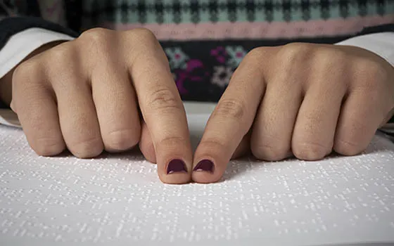
World Braille Day 2019
Each year during the month of January we recognize World Braille Day which gives us the opportunity to take a moment and appreciate the incredible gift that Braille has given to those who are blind or suffer from vision loss. What is Braille? Braille is a tactile representation of letters...
Read MoreAre Nerf Guns a Dangerous Holiday Present?
Nerf Guns: Popular, Projectile... Safe? With the newest Nerf guns and blasters reigning at the top of lists for the most popular toys this holiday season, many parents are excited to surprise their kids (or their spouses) with these coveted toy weapons. There is, in fact a whole culture behind these...
Read More8 Tips to Relieve Winter Dry Eyes
Whether you live in a climate with cold winter weather or you are planning a ski trip up north, winter can be a challenge if you suffer from dry eyes. Dry, cool air, cold winds and even drier indoor heating can cause eye irritation, burning, itchiness and redness, and sometimes...
Read More
Diabetes and Your Eyes
Diabetes is becoming much more prevalent around the globe. According to the International Diabetes Federation, approximately 425 million adults were living with diabetes in the year 2017 and 352 million more people were at risk of developing type 2 diabetes. By 2045 the number of people diagnosed is expected to...
Read More
Have an Eye Safe Halloween
Brush Up Before You Dress Up Halloween is one of the most fun times of the year for children and adults alike. When else do you get to dress up as anyone (or anything) you want, socialize with friends and eat lots of treats? Nevertheless, lurking behind those costumes and...
Read More
Exercise and Your Eye Health
Regular exercise is an essential component of overall health and wellness. It is proven that exercise reduces sickness and disease; it increases strength, immunity, and mental health; and it also helps regulate bodily functions and maintain a healthy weight. Research shows that exercise can lower our risk of chronic conditions...
Read More
Is Too Much Screen Time Dangerous For Your Kids?
Screen Time Pros and Cons Whether it is homework, email, gaming, chatting with friends, searching the web or watching Youtube, kids these days seem to have an endless number of reasons to be glued to a screen. Many parents out there are wondering how bad this can be for their...
Read MoreHealthy Aging for the Eyes
Getting old doesn’t have to be synonymous with vision loss. There is a lot you can do to keep your eyes and vision healthy and prevent age related eye disease and vision loss, especially if you start early. Keeping your eyes healthy and strong may require some lifestyle changes, but...
Read More
Progressive Myopia: When Your Child’s Vision Keeps Getting Worse
What Is Progressive Myopia? Nearsightedness or myopia is one of the most prevalent eye disorders worldwide and its incidence is increasing. In fact by 2050, myopia is projected to affect half of the world’s population! Many children diagnosed with nearsightedness (myopia) experience a consistent worsening of their vision as they...
Read MoreThe Dangers of An Online Eye Test
An online eye test may seem like a convenient way to check your vision or get an eyeglass prescription but beware, these tests aren’t all they are chocked up to be. In fact, they may even be dangerous. What is an online eye test really testing? An online eye test...
Read More
Signs That Your Child Has a Vision Problem
Healthy eyes and good vision are essential for your child’s growth and development. In fact, learning is 80% visual, which means a child’s success in school, athletics and many other aspects of life can be impacted by poor vision. Good vision goes beyond how far you can see, and also...
Read More
Eye Dangers in the Dorm – Eye Health for College Students
It’s almost back to school time for college students and whether this is your first time away from home or you are already a pro, you want to be prepared with as much knowledge as possible to live safely on your own. This knowledge includes eye and vision safety, as...
Read MoreWhy You Shouldn’t Rub Your Eyes
While it may seem like a harmless action, rubbing your eyes can actually cause a lot of damage. There are a number of different reasons that people rub their eyes and for the most part, it does more harm than good. While rubbing your eyes might feel really good in...
Read More
Ocular Migraines
Migraine Awareness Month: An ocular migraine is any migraine headache that involves a visual disturbance such as flashes of light, seeing stars or zigzags or the appearance of blind spots in the visual field. Ocular migraines can interfere with your ability to go about your daily tasks such as driving,...
Read More
How-to Guide for Buying Sunglasses
Sure, sunglasses might add the final touches to your chic ensemble, but the real reason to purchase your shades is to protect your eyes from the sun. Not only does glare from the sun make it difficult to see, but the UV rays it reflects can cause permanent damage to...
Read More
Sports Vision Deconstructed
Vision is a critical component to succeed as an athlete and this doesn’t just mean having 20/20 vision. There are a number of visual processes that are involved in optimal sports performance, whether you are playing a weekly little league game or competing in professional sports. The eyes and the...
Read More7 Eye Symptoms You Shouldn’t Ignore
While we all know that regular eye exams can help detect warning signs of disease and prevent vision loss, many people fail to seek medical attention when there is an acute problem with the eye. In fact, only about half of Americans that are at risk for serious vision loss...
Read More
Women’s Eye Health – 7 Tips for Optimal Vision for Life
April is Women’s Eye Health Month in the USA and May is Healthy Vision month in Canada too, so let’s take the opportunity to look at some tips for maintaining eye and vision health, with a special focus on women. Statistically, women are more at risk than men for eye...
Read More
Ultraviolet Light and your Eyes
If you want strong, healthy eyes and clear vision for life, a major step you can take is to protect your eyes from UV radiation. Wearing proper eye protection from the sun reduces the risk of a number of eye diseases and other conditions that are caused or worsened by...
Read More
Should I Be Concerned When My Eyelid Twitches?
We all experience the occasional eyelid twitch, which is when the muscle of the eyelid spasms involuntarily. Usually, it comes and goes without intervention and while sure, it can be irritating, is a twitching eyelid ever something to be concerned about? An eyelid twitch, also known as a myokymia, can...
Read More
Signs of Eye and Vision Problems in Infants
Infant Eyesight Despite nine months of growth in utero, babies are not born with fully developed eyes and vision - just like they can't walk or talk yet. Over the first few months of life, their visual systems continue to progress, stimulated by their surroundings. Babies will develop the ability...
Read More
AMD Awareness Could Save Your Vision
It’s that time of the year again. Each February, the optometric community bands together to create awareness about age-related macular degeneration (AMD). AMD is a leading cause of vision loss for people 50 years and older; early detection plays a key role in the outcome of the disease. That’s why...
Read More
Trouble Seeing at Night? All About Night Blindness
At this time of year when the sun sets early, many people are affected by night blindness. Night blindness or nyctalopia refers to difficulty seeing at night or in poor or dim lighting situations. It can be caused by a number of underlying conditions, sometimes completely benign and sometimes as a...
Read More
The Sneak Thief of Sight
It’s that time of year again. January is National Glaucoma Awareness Month, a time set aside each year to create awareness about this potentially devastating disease. The reason awareness about glaucoma is so important is because as its nickname, The Sneak Thief of Sight, describes, the disease often causes permanent...
Read More
Don’t Let Snow Blindness Ruin Your Winter Vacation
While most people have sunglasses high on their packing list for a tropical vacation, many people don’t consider it as much of a priority for colder climate getaways. But they should, and here’s why: Wintertime vacations often include activities that involve snow and ice and in general, conditions that can...
Read More
6 Crazy Holiday Eye Injuries to Avoid
As the season to deck the halls arrives, make sure that you aren’t one of the many people who find themselves celebrating in the urgent care clinic due to an eye injury. The holidays present many opportunities for potential eye injury so it’s important to be aware and proceed with...
Read More
10 Eye Healthy Foods to Eat This Year
The New Year is coming and many people include healthier eating and exercise in their resolutions for the year ahead. Well other than weight loss and overall health and disease-prevention, a healthy diet and regular exercise can protect your eyes and your vision. In particular, there are certain vitamins and...
Read MoreWomen and Diabetes – World Diabetes Day
November 14th is World Diabetes Day. This year, the theme of World Diabetes Day is women and diabetes - our right to a healthy future. The goal of this campaign is to promote awareness of the importance of equal and affordable access for all women, whether they are at risk...
Read More
What You Need to Know to Help World Blindness
October is World Blindness Awareness Month, an initiative started to help the public to understand the realities of visual impairment and how it affects the world population. Unfortunately, there are hundreds of millions of individuals around the world who are unnecessarily blind or visually impaired due to causes that are...
Read More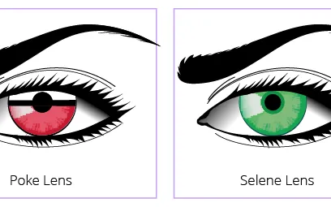
Halloween Eye Safety
October has arrived and that means many people are already starting to plan for upcoming costume parties and trick-or-treating for the Halloween season. This is why now is the time to remind the public about some very important precautions about eye safety since there are some common costume props and...
Read More
Trouble Seeing the Fine Print? Here are Your Options…
Every good pair of eyes eventually gets old and with age comes a condition called presbyopia. Presbyopia, which usually begins to set in some time around 40, occurs when the lens of the eye begins to stiffen, making near vision (such as reading books, menus, and computer screens) blurry. You...
Read More
Aging Eyes and Driving Safety
Even if you don’t have any eye or vision problems, the natural process of aging affects your ability to see and react to visual stimuli. It’s important to know the impact the aging can have on your eyes and vision so you can take the necessary precautions to stay safe...
Read MoreIs Your Teen Ready for Contacts?
Many teens who wear glasses are eager to try out contact lenses for convenience, fashion or to just provide another option for vision correction.
Read More
Inside a Life With Color Vision Deficiency
What’s it like to be color blind? Contrary to what the name implies, color blindness usually does not actually mean that you don’t see any color, but rather that you have difficulty perceiving or distinguishing between certain colors. This is why many prefer the term color vision deficiency or CVD...
Read MoreHow to Safely View the Great American Eclipse of 2017
On August 21st, for the first time since 1979, a solar eclipse will be visible across North America. What's even more historic is that it will also be the first time an eclipse will be visible across the continent, from coast to coast, since 1918. If you want to bear...
Read More
Are Your Eyes Sensitive to Light?
Light sensitivity, also known as photophobia, is a condition in which bright light - either natural sunlight or artificial light - can cause significant discomfort, pain and intolerance. People that experience light sensitivity will find themselves needing to close their eyes or squint when exposed to light and often experience...
Read MoreGot a Shiner!
What Exactly Is a Black Eye? A black eye, also known as a periorbital hematoma, is usually not an injury of the actual eye (which is why it is called “periorbital”- around the eye). It typically occurs when there is an injury to the face or the eye socket which...
Read MoreCataract Awareness and Prevention
According to the World Health Organization, cataracts are responsible for 51% of cases of blindness worldwide - although this blindness is preventable with treatment. In fact, research shows that in industrialized countries about 50% of individuals over the age of 70 have had a cataract in at least one eye....
Read MoreAre You Ignoring Your Dry Eyes?
You Don’t Have to Live With Dry Eyes Have you noticed that your eyes feel chronically dry, itchy, scratchy or even sometimes watery? Many people that have these symptoms just go on with their lives until the symptoms become unbearable. What they don’t realize is that these are signs that...
Read More
Does Smoking Affect Vision?
Eye Doctors Weigh In: How Smoking Can Harm Your Vision & Eye Health We all know that smoking is bad for you, especially the risks that it poses to your heart and lungs. What many people do not know is that cigarette smoke negatively affects your eyes and vision too. Smoking...
Read More
Sjogren’s Awareness – Understanding The Invisible Disease
In an effort to spread the word to increase awareness about Sjogren’s Disease, eye care providers are speaking out about this hard-to-diagnose condition. Sjogren’s is a systemic autoimmune disorder that can affect the whole body. One of the primary symptoms is excessive dryness particularly in the eyes and mouth. Other...
Read More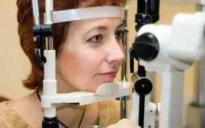
April is Women's Eye Health and Safety Month
Hey women! Did you know that women are more likely to suffer from vision problems and are at higher risk of permanent vision loss than men? Well 91% of the women surveyed recently didn’t know that, which means that many of them aren’t taking the necessary precautions to prevent eye...
Read MoreEye Health For Women
Hey women! Did you know that women are more likely to suffer from vision problems and are at higher risk of permanent vision loss than men? Well 91% of the women surveyed recently didn’t know that, which means that many of them aren’t taking the necessary precautions to prevent eye...
Read More
The Right (and the Wrong) Way to Clean Your Glasses
There is nothing worse than a dirty spot on your glasses - well except perhaps many dirty spots or smudges. When that happens, most of us are tempted to grab the corner of our shirt and wipe it off, but resist the temptation - this is actually not a good...
Read More
It’s Time to Talk About Blue Light
Blue light. Do you know what it is? Do you know where it comes from, or how it can be harmful to your eyes? If you don’t know the answers to these questions, you are not alone, yet it is important that you become aware to protect your eyes for...
Read More
Understanding Eye Color
Eye color is a hereditary trait that depends on the genes of both parents, as well as a little bit of mystery. The color of the eye is based on the pigments in the iris, which is a colored ring of muscle located at the center of the eye (around...
Read More
6 Ways to Prevent Age-Related Macular Degeneration (AMD)
Age-related macular degeneration is a serious condition that can threaten your vision and general well-being. Characterized by the deterioration of the central area of the retina called the macula which is responsible for focused vision, the disease gradually reduces your central vision. This affects the ability to see fine details,...
Read MoreAre You Missing Your Child’s Hidden Vision Problem?
Your toddler may show every sign of good eyesight including the ability to see objects in the distance, however that doesn't necessarily mean that he or she doesn’t have a vision problem.
Read More
“The Sneak Thief of Sight” Is On Our Minds This January
Make your resolution for healthy vision this year with increased awareness of the leading cause of blindness worldwide.
Read MoreHoliday Season Shopping: Are Nerf Guns Safe for the Eyes?
This is the one way you can be sure that you or your child’s eyes are truly safe during Nerf shooting:
Read MoreDry Eye Syndrome Causes and Cures
Despite the fact that it is one of the most common eye problems, a surprisingly large percentage of patients are not aware of it.
Read MoreNovember is Diabetes Awareness Month
Chances are it affects you or someone you know. November has been dedicated as a time to spread awareness about the disease, its risk factors and the effects it has on your body, your daily life and the lives of your loved ones.
Read MoreDon’t Let Fall Eye Allergies Get You Down
Red, itchy, watery eyes and swollen eyelids (along with sneezing, congestion or a runny nose)...
Read More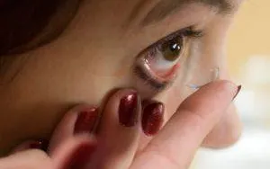
How Contact Lenses Can be a Danger to your Eyes
Most people wouldn’t consider contact lenses dangerous. In fact, they are a great alternative to glasses, offering convenience and great vision for those who wear them. However, when not obtained and used according to an eye doctor’s instructions, the consequences can be devastating. Contact Lenses Need to Fit Like shoes,...
Read MoreAn Active and Eye Safe Lifestyle
90%! That’s the number of sports eye injuries that studies show can be prevented using proper eye protection. Yet most sports leagues don’t require protective eyewear as part of their uniform or safety requirements. This leaves it up to athletes, parents and coaches to ensure that proper measures are taken...
Read More10 Tips to Teach Children About Eye Safety
It is important to teach your children about eye health and safety from a young age. This includes awareness about how your overall health habits affect your eyes and vision as well as how to keep your eyes safe from injury and infection. Starting off with good eye habits at...
Read MoreWhen 20/20 Vision isn’t Enough For Your Child
Since studies show that learning is 80% visual, children with untreated vision problems can really suffer when it comes to school. Most people think that good “vision” means 20/20 acuity but in reality, vision is much more complex. Your brain is actually what completes the processing of the visual world...
Read MoreCutting Edge Eye-dentification
We have all seen the futuristic thrillers that use high-tech eye scanning identification systems but nowadays the technology does exist to use them in real life. A greater number of high security establishments have begun to use iris recognition for identification and security systems. How does it work? The iris...
Read MoreInnovations in Color Blindness
There have been a lot of videos going viral lately of color blind people “seeing color” for the first time using specialized glasses. The emotional reactions of amazement, shock and joy even lead some to break down into tears. The glasses provide these individuals a way to view the world...
Read MorePoolside Eye Safety
Whether it is the sea, the sand, the sun or the softball field, summer brings people outside and this creates exposure to a multitude of potential dangers to the eyes. One risk that is possibly the least obvious is the swimming pool. Swimming pools are the culprit for multitudes of...
Read MoreCataract Awareness Month: What to Expect from Cataract Surgery
After the age of 50 most people will eventually be diagnosed with cataracts. Cataracts are when the natural crystalline lens of the eyes become clouded, causing vision impairment that can not be corrected by glasses or contact lenses. While commonly an age-related condition, occasionally there are infants born with a...
Read MoreSunwear for a Bright Future
According to the Vision Council’s 2016 UV (Ultraviolet Radiation) Protection report, parents are more likely to wear sunglasses (56%) than their children (only 29%!). Yet children, who spend much more time outside, are typically exposed to three times the amount of sunlight and UV radiation that adults get. This early...
Read More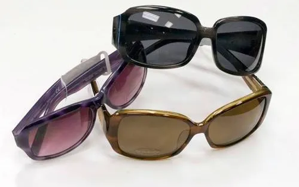
How UV Damages Your Eyes
UV Awareness Month
Read MoreWhat is a stye anyway?
A stye (known by eye doctors as a hordeolum) is an infection of an oil gland which forms a pimple-like bump on the base of the eyelid or within the eyelid itself. Styes can be uncomfortable, causing swelling, pain, redness, discomfort and sometimes excessive tearing or blurred vision if it...
Read MoreEye Allergies
Along with congestion, runny nose, coughing, sneezing, headaches and difficulty breathing, individuals with allergies often suffer from eye allergies or allergic conjunctivitis resulting in red, watery, itchy and sometimes swollen eyes. Just as irritants cause an allergic response in your nasal and respiratory system, your eyes also react with an...
Read MoreBifocal and Multifocal Contact Lenses
If you are over 40 and have difficulty seeing close up, you probably have a common age-related condition called presbyopia which is when the eye’s natural lens loses the ability to focus on close objects. Presbyopia is a natural process that occurs as the eye ages and affects the majority of...
Read MoreWorkplace Eye Wellness: The Dangers of Blue Light
When people think of workplace dangers to the eyes, it is usually machinery, chemicals or construction materials that come to mind. However, a growing danger to the eyes is one that may be less obvious - exposure to blue light from digital devices, television and computer screens and artificial lighting....
Read MoreHow to Find the Right Pair of Glasses for your Child
Whether you are looking for regular prescription glasses, sunwear or protective sports eyewear, it can be tough choosing the best eyewear for children and teens. On the one hand, they need to be comfortable and provide the optimal fit for improved vision and protection. At the same time, they also...
Read MorePreventing Age-related Macular Degeneration
February is AMD and Low Vision Awareness Month in the United States, and it’s White Cane Week in Canada. Age-related Macular Degeneration (AMD) is a leading cause of vision loss in adults aged 50 and older. Awareness...
Read More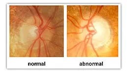
Resolve to Prevent Glaucoma in 2016
This year, make healthy eyes and vision your resolution. Find out if you or a loved one is at risk for glaucoma, and take steps for prevention. Glaucoma is a leading cause of preventable vision loss and blindness in adults in the United States and Canada and the second leading...
Read More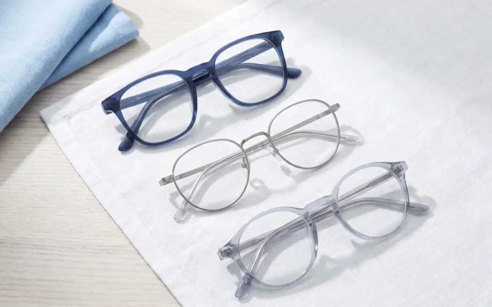
Why Do We Need Glasses?
Refractive errors including myopia, hyperopia, astigmatism and presbyopia.
Read MoreEye Safe Toys and Gifts for This Holiday Season
‘Tis the season for giving, and parents, grandparents, family and friends need to know how to choose toys and games that protect children’s health and eyesight.
Read More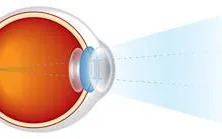
How Do We See?
Have you ever thought about how vision works? It's an incredible system and process!
Read MoreHow to Prevent Diabetic Vision Loss
Prevention and treatment for eye complications associated with Diabetes
Read More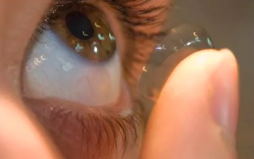
Decorative Lenses Could Cost You Your Vision
Beware this Halloween and think before you blink (in decorative contact lenses that is)! Sure, decorative contact lenses can enhance any Halloween costume, but if not taken seriously, they can also cost you your vision. Whether they are sold as cosmetic lenses, colored lenses or fashion lenses, they are anything...
Read MoreIt's Time to Be Serious About Home Eye Safety
Home Eye Injury Awareness and Prevention
Read More6 Common Eye Myths Debunked
Over the centuries there have been a lot of old-wives tales circulating about eyes and vision. You know, like the one that if someone hits you on the back while your eyes are crossed they will stay that way. Unlike this example, some of these myths do have roots in...
Read MoreProtective Sports Eyewear is a Serious Matter
There are thousands of eye injuries a year related to sports. According to the National Eye Institute eye injuries are the leading cause of blindness in children in North America and most injuries occurring in school-aged children are sports-related. Further 99% of sports-related eye injuries can be prevented simply by...
Read MoreWelcome to our New Website
Read MorePink, Stinging Eyes?
Conjunctivitis, also called pink eye, is one of the most frequently seen eye diseases, especially in kids. It can be caused by viruses, bacteria or even allergies to pollen, chlorine in swimming pools, and ingredients in cosmetics, or other irritants, which touch the eyes. Some forms of conjunctivitis might be...
Read MoreHow Pregnancy Affects Vision
The hormonal fluctuations experienced during pregnancy can cause many unexpected changes in your body, including your eyes and vision. Most of these changes are temporary and will return to normal once you give birth. It’s important to know which vision changes are normal for an expecting mother and which could...
Read MoreIs Your Baby’s EyeSight Developing Normally?
A baby’s visual system develops gradually over the first few months of life. They have to learn to focus and move their eyes, and use them together as a team. The brain also needs to learn how to process the visual information from the eyes to understand and interact with...
Read MoreGuidelines For Picking the Right Pair of Shades
There is a lot more that goes into finding the right pair of sunglasses than just fit and fashion. While it’s important to look and feel great in your shades, sunglasses also have the very important job of properly protecting your eyes from the sun. Here are a few facts...
Read More6 Things You Need To Know About Cataracts
Cataracts are a leading cause of vision loss in the United States and Canada. Here are 6 things you need to know. 1. Chances are you will develop a cataract! Cataracts are considered part of the natural aging process so if you live long enough, you will likely eventually develop...
Read MoreWhat You Need to Know About Firework Eye Safety
Independence Day may have passed but fireworks season is still in full swing and fireworks-related injury and death is a real and serious danger. According to the 2014 Annual Fireworks Report, compiled by the US Consumer Product Safety Commission there were at least 11 deaths and 10,500 injuries due to...
Read More5 Ways to Ensure Healthy Vision
Your eyes are constantly at work for you, playing a vital role as you navigate through each day. As May is healthy vision month, here are some things to keep in mind: Know your genes While your eyes may be the same color as your father’s eyes, you may have...
Read MoreWhat Women Need to Know About Eye Health
According to Women’sEyeHealth.org, ⅔ of blindness and visual impairment occurs in women. Additionally, an estimated 75% of visual impairment is preventable or correctable with proper education and care. With the increased risks for women it’s critical for women to know about the risks and prevention to effectively protect their eyes...
Read MoreEnjoying Life During Eye Allergy Season
Spring is in the air. But along with the beauty of the blooming flowers and budding trees, comes allergy season. The high pollen count and allergens floating in the fresh spring air can certainly wreak havoc on the comfort level of those suffering from allergies, causing an otherwise nature-loving individual...
Read MoreCan you Really Go Blind from Looking at a Solar Eclipse?
Last week, people in South America, Europe, North Africa, and parts of Asia and the Middle East saw a solar eclipse. As you may have heard, looking directly at a solar eclipse is very dangerous for your eyes and vision. Nevertheless, this rare event is something that many people want...
Read More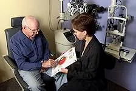
10 Steps to Prevent Vision Loss
March is Save Your Vision Month, a time to raise public awareness about how to protect your eyes and your vision. Most people aren’t aware that 75% of potential vision loss can be prevented or treated. This largely depends on patients being proactive and educated about their eye health. Here...
Read More
Refocus on the Digital Age with Computer Glasses
Digital devices have impacted our world in so many positive ways, allowing us to connect, work, play and get information at the speed of light. But all of this good brings with it a measure of concern: Digital Eye Strain or Computer Vision Syndrome. Focusing on your vision on digital...
Read More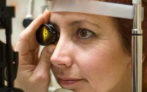
Living With Low Vision
February is Low Vision and Age-Related Macular Degeneration awareness month. Low vision describes a set of conditions in which there is significant visual impairment which can not be corrected with traditional means such as glasses, contact lenses, medication or eye surgery. Low vision includes a loss of visual acuity which...
Read MoreRequest Your Next Appointment Online…
Read MoreUnder Pressure: Are you at Risk for Glaucoma?
January is Glaucoma Awareness Month. Glaucoma is a serious, vision threatening disease. You can save your eyesight, by knowing the facts. Are you at risk of developing glaucoma? The short answer is yes. Anyone can get glaucoma and because of this it is important for every person, young and old...
Read MoreKnow How and When to Treat an Eye Infection
It’s that time of year again…coughs, sneezing, running noses and itchy, red eyes. How do you know when an eye irritation is something that needs medical attention? First of all, any time an eye infection is accompanied by fever, excessive discharge or pain, you should see your eye doctor immediately....
Read More8 Tips to Beat Winter Dry Eyes
One of the most common patient complaints during the winter months is dry eyes. In the cooler climates, cold winds and dry air, coupled with dry indoor heating can be a recipe for eye discomfort. Dryness and irritation can be particularly debilitating for those who wear contact lenses or suffer...
Read More"Eye" Am Home for the Holidays – 7 Eye Tips for College Students
Winter break is in a few weeks and, with college students finding their way home for the holidays, it is a good time for parents to check in and make sure their independent kids are taking care of themselves properly.Vision plays a key role in learning as well as extra-curricular activities...
Read MoreDo You Know the Facts About Diabetic Eye Disease?
November is Diabetic Eye Disease Awareness Month. Do you know the facts?
Read More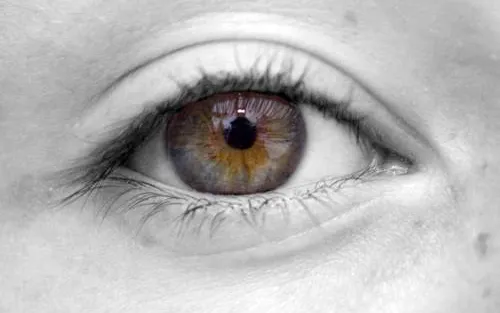
7 Things You Should Know About Eyelid Twitches
You may have experienced this before. Out of nowhere, your eyelid starts twitching uncontrollably. While this can be a cause of aggravation, eyelid twitches, spasms or tics are actually quite common. Here are 7 things you should know about this eye condition: Eye twitches are generally caused by a repetitive,...
Read MoreOctober is…
October is 'Eye Injury Prevention Month' in the USA and 'Eye Health Month' in Canada. There are about 285 million people living with blindness and low vision all around the world. Children account for some 19 million of them. The vast majority of visual impairment is readily treatable and/or preventable....
Read MoreWorld Sight Day Challenge – No More Avoidable Blindness
The World Sight Day Challenge, slated to take place on October 9, 2014 is an annual awareness day that aims to focus global attention on blindness and vision impairment worldwide. The day aims to create awareness that blindness can be avoided if there is universal access to quality vision and...
Read MoreProtect Children's Eyes During Sports
The new school year has kicked off and you can tick off purchasing all that back to school equipment. Now, it's time to think about what your child will need for after school sports and hobby activities. Making sure they have the right protective eyewear for their sporting or athletic...
Read More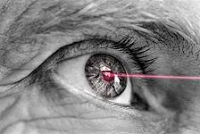
Cutting Edge Glaucoma Technology
A futuristic, yet simplistic, eye implant paired with a smartphone app may change the way eye doctors treat glaucoma.
Read MoreComfortable Vision for Back-to-school Reading
School is starting: Do you know how to set up your child’s homework and reading spot? Reading and writing are some of the most fundamental skills that your child to facilitate learning in school, so it is important to make sure that your child's eyes are comfortable when they are...
Read MoreBe on the Lookout for Vision Problems this Summer Break
Summer vacation is well under way, but did you know that even when your child is out of the classroom, vision problems can have an impact on his/her daily activities? Look out for these 4 warning signs during the summer months – they could be a sign of vision difficulties...
Read MoreShould You Be Worried About Eye Floaters?
Eye floaters are actually more common that you may think. Many people notice specks or cobweb-like images moving around in their line of vision, at some point. Some even report experiencing a "snow globe effect" as if they are swatting at many imaginary bugs. Floaters may be an annoyance, but...
Read MoreKeeping an Eye on Cataracts
Cataracts affect millions of people nationwide and as the population continues to age, the numbers keep increasing. The good news is, cataracts are often manageable and treatable. As June is Cataract Awareness Month, here are some facts you should know to help you recognize cataracts and prevent permanent vision loss. ...
Read MoreA Look Behind Sleeping Eyes
Have you ever wondered what your eyes do when you finally close them after a long day of visual processing and stimulation? Let's take a closer look at what happens behind your closed lids when your head hits the pillow. Firstly, once your eyes are closed, they do continue to...
Read More6 Things You Should Know about UV Radiation and Your Eyes
The heat of long summer days is nearly upon us. As the sun's rays intensify and people spend more time outdoors in the sunshine it is very important to be aware of the potential damage exposure to the sun can have on your eyes. May is UV Awareness month. Here...
Read MoreDealing with Your Tween's and Teen's Eyesight
It can be devastating for a tween or teen to be told he or she needs to wear glasses, especially if it is sudden. Many tweens and teenagers are concerned about how glasses will affect their appearance, whether they will be made fun of (which unfortunately is a legitimate concern...
Read More9 Tips for Coping With Eye Allergy Season
Spring is on the way. Soon the sun will be shining, the flowers blooming and allergy season will be upon us. If you have allergies, your eyes are often affected by the high pollen count along with other allergens floating in the fresh spring air. Tree pollens in April and...
Read MoreHow Your Eyes Convey Emotion
Your eyes communicate much more than you may realize, in fact they play a huge role in your non-verbal communication. Consciously or not, the way you move your eyes, look at someone, blink or make eye contact can say a lot about what you are thinking and feeling. Here's a...
Read MoreProtecting Your Eyes From The Desk Job
There are so many people who spend hours a day, if not most of the day working on a computer or mobile device. They usually do so without taking notice of the effect this has on their bodies. Using a computer or handheld device for extended amounts of time can...
Read MoreNew Study Shows How Your Eyes Shed Light on Your Health
It's been said that your eyes are the window to your soul. Well, research is showing that your eyes are a window to a lot more than your thoughts and emotions; it can be an indicator of your overall health. A study by UnitedHealthcare entitled, “Impact of Eye Exams in...
Read MoreHope in Sight for Low Vision
February is low vision awareness month. Low vision is a condition in which an individual suffers significant vision loss that can't be fully corrected with glasses, contact lenses, medication or surgery. Low vision can affect both children and adults, but is more common in the elderly, and requires significant adjustments...
Read MoreHow to Encourage Young Kids to Wear their First Pair of Glasses
Your child's first pair of glasses will make an important difference in his or her ability to see and interact with the surrounding world. However, a new pair of glasses can also present a big adjustment for both parents and kids as you get used to a new look and...
Read More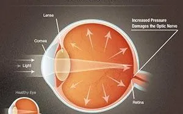
7 Facts You Should Know About Glaucoma
7 Facts You Should Know About Glaucoma Glaucoma, which refers to a group of eye diseases that damage the optic nerve, is often called 'the silent thief of sight'. This nickname evolved because the disease creeps up unnoticed in its early stages, causing no pain and few, if any symptoms....
Read MoreNew Year's Resolutions for An Eye Healthy 2014
The New Year is a time to start fresh and renew our commitment to health, happiness and success. It’s important to include eye and vision health and safety in these resolutions. Here are the top six ways you can make your eyes and vision a priority this year. Schedule a...
Read MoreFun Holiday Gifts That Are GOOD for Children's Vision
The holiday season is on our doorstep. With technology so much a part of our lives, the easy go-to gifts for kids often include an enormous array of hand-held video devices and home gaming systems. Did you know that after extensive use these games can be harmful to children’s eyes...
Read MoreWhat You Should Know about Diabetes and Your Vision
Diabetes affects people of all ages, races and genders. An estimated 25.8 million Americans or 8.3 percent of the population suffer from the disease, according to data published by the Centers for Disease Control and Prevention in 2011. In fact, diabetic eye disease is the leading cause of new cases...
Read MoreKeeping Your Contact Lenses Clean
If you wear contact lenses, you probably know the hygiene routine you should follow when removing your lenses: Wash your hands thoroughly with soap and water and dry them on a clean, lint free cloth. Remove the lens from your eye and clean the lens immediately (if you wear multi-use...
Read More10 Tips to Protect Your Vision
Did you forget to put on your sunglasses today? Are you constantly sitting in front of a computer screen without taking breaks to look away? Maybe you also skipped your yearly eye exam, again. These are just some of the things we tend to overlook when it comes to our...
Read MoreThis Halloween Be Wary of Costume Contact Lenses
As Halloween approaches and costume planning gets more serious, many consider the use of novelty or costume contact lenses as a way to add that extra flair. Whether you are dressing up as a cat, a vampire, or looking for something fun that glows in the dark, dressing up your...
Read MoreHow to Prevent Dry Eyes During Air Travel
Many travelers experience dry eyes after extended travel by air. The dry environment of a temperature- and pressure-controlled air plane cabin can take its toll on your eyes. The good news is there are a number of steps you can take to reduce the uncomfortable symptoms associated with travelers’ dry...
Read MoreDoes Chlorine Hurt your Eyes?
Just because the summer is coming to an end, doesn’t mean that we have to say goodbye to the swimming pool. Whether it means a nice refreshing dip on a warm fall afternoon or a winter swim in an indoor pool, swimming is a great activity for both fun and...
Read MoreTechnology in the Classroom and the Eyes
The use of technology has become commonplace in the classroom. So much so that today’s generation of students, from kindergarten to university, navigates computers, smartphones and tablets all the time. Many schools have even implemented the use of smart boards and bring your own device (BOYD) programs. However, as amazing...
Read MoreTreating Vision Problems Lowers Risk of Falling in Seniors
For adults over the age of 65, the right pair of vision correcting glasses can literally be a life saver. Seniors aged 65 and up are at increased risk of falling, which is the leading cause of injury, injury-related death, and hospitalization for this age group. According to the Centers...
Read MoreThe Great Glasses Play Day 2013
The first weekend of August (August 3rd and 4th) has been marked as the 2nd annual Great Glasses Play Day. The event, which first launched in 2012 was created for parents, eye care professionals, educators and children who wear glasses or have other vision challenges to celebrate and create awareness...
Read MoreFirst Aid for Eye Injuries
To ensure that your eyes remain healthy, it is essential to protect them from injury and to take proper care measures if an injury has occurred. As July is Eye Injury Prevention Month, here are a number of practical first aid tips to remember if you or anyone you know...
Read More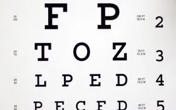
Understanding the Eye Chart
Eye charts of different variations have become a standard in vision screenings and eye exams. One of the most familiar charts associated with vision is the Snellen eye chart, designed by Dutch ophthalmologist Hermann Snellen in 1862 to measure visual acuity- how well you can see at various distances. Although...
Read More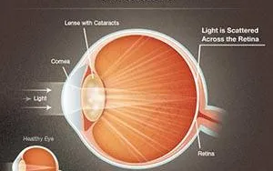
June is Cataract Awareness Month
Cataracts, one of the most common causes of blindness, develop when the lens of the eye, located behind the iris and pupil, becomes opaque or cloudy. A cataract can result in loss of vision as it prevents light from passing into your eye and focusing on the retina. While cataracts...
Read MoreAge Related Macular Degeneration and Your Central Vision
Did you know that age-related macular degeneration (AMD) is one of the leading causes of vision loss and blindness among adults aged 50 and above? AMD occurs when the part of the retina responsible for your sharp central vision, the macula, begins to deteriorate. Central vision is the visual field...
Read MorePink, Stinging Eyes? It Could Be Pink Eye
Conjunctivitis, also called pink eye, is one of the most frequently seen eye diseases, especially in kids. It can be caused by viruses, bacteria or even allergies to pollen, chlorine in swimming pools, and ingredients in cosmetics, or other irritants, which touch the eyes. Some forms of conjunctivitis might be...
Read More